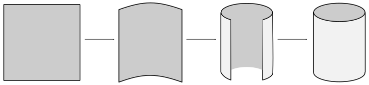
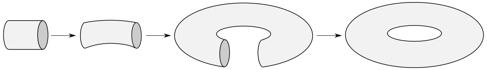
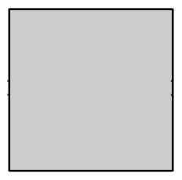

Quotient Spaces
Now that we've defined quotient sets, let's talk about quotient sets of topological spaces. The notion of a quotient space will effectively allow us to glue pieces of topological spaces together. This corresponds to the collapsing of equivalent subsets to points which occurs in quotient sets, as I mentioned in my last post. These are useful tools, so I'm going to jump right into it. It may be a bit difficult to see where I'm going with this at first, but bear with me and hopefully it'll become clear.
Definition: Let $X$ denote a topological space, let $A$ be a set and let $f:X\to A$ be a surjective function. The quotient topology induced by $f$ has as its open sets all sets $U$ such that $f^{-1}[U]$ is open in $X$. We call $f$ a quotient map and $A$ a quotient space when equipped with this topology.
Supposing the quotient topology is truly a topology, we get for free that quotient maps are always continuous, simple from the way they're defined. However, we still need to verify that quotient topologies satisfy the requirements of a topology. We need to show that $\varnothing$ and $A$ are open, and that unions and finite intersections of open sets are open.
Theorem. Let $X$ denote a topological space, let $A$ be a set and let $f:X\to A$ be a surjective function. Then the quotient topology defined above is a topology on $A$.
Proof. It is clear that $f^{-1}[\varnothing]=\varnothing$ and so the empty set is open in $A$. Furthermore, since $f$ is surjective, we know that $f^{-1}[A]=X$ is open in $X$ and so $A$ is also open in $A$.
Next, suppose that $I$ is an indexing set and $U_i\subseteq A$ are such that $f^{-1}[U_i]$ is open in $X$ for each $i\in I$. Then certainly
$$f^{-1}\left[\bigcup\limits_{i\in I}U_i\right]=\bigcup\limits_{i\in I}f^{-1}[U_i]$$
is open in $X$ since it is the union of open sets. Thus, $\bigcup\limits_{i\in I}U_i$ is open in A.
Finally, suppose that $n\in\mathbb{Z}^+$ and that $U_i\subseteq A$ are such that $f^{-1}[U_i]$ is open in $X$ for each $1\le i\le n$. Then
$$f^{-1}\left[\bigcap\limits_{i=1}^n U_i\right]=\bigcap\limits_{i=1}^n f^{-1}[U_i]$$
is open in $X$ since it is the intersection of a finite number of open sets. Thus, $\bigcap\limits_{i=1}^n U_i$ is open in $A$, completing the proof.
There is also an equivalent, more intuitive way to define quotient spaces which will probably look more familiar to you after our discussion on quotient sets last post.
Definition: Let $X$ denote a topological space and let $\sim$ be an equivalence relation on $X$. The quotient space $X/\negthickspace\sim$ is this quotient set where the open sets are sets of equivalence classes whose unions are open in $X$.
We've established that quotient maps induce a topology in this way, so let's take a look at what they can do for us.
While it's true that any set $A$ can be turned into a quotient space by defining a suitable surjection as our quotient map, we generally restrict our interest to partitions of $A$. Let's first visualize the construction of a simple quotient space, which you may have seen before. We will then figure out how to formally document this process.
Consider the square $[0,1]^2$ in the standard topology. We can first create a cylinder from the square by gluing two opposite edges together.

Next, we can glue the two open circular ends of the cylinder together to form a torus.

What we've really done here is glue the opposite edges of the square together, one pair at a time. A much more concise diagram representing this act simply identifies opposite edges of the square with each other, and the gluing is implied.

In such diagrams, it is understood that the two edges with one arrow get glued to each other and the two edges with two arrows get glued to each other. In this case everything is symmetrical so it doesn't matter which pair gets glued first, but there are probably cases in which it does matter. It is conventional to first glue together sides with one arrow, then two arrows and so on.
It is this last diagram which provides us with something we can really use. This identification of sides is crucial to defining the torus as a quotient space of the square. What we are really doing here is partitioning the square in such a way that certain pairs of points on the boundary get grouped into the same equivalence class. More precisely, we partition the square into many sets, namely every point in the interior of the square and each pair of opposite points on the square's boundary:
$$\begin{align}
B_{x,y} &= \{(x,y)\}\text{ for } (x,y)\in (0,1)^2, \\
C_x &= \{(x,0),(x,1)\}\text{ for } x\in (0,1), \\
D_y &= \{(0,y),(1,y)\}\text{ for } y\in (0,1), \\
E &= \{(0,0),(0,1),(1,0),(1,1)\}.
\end{align}$$
Allow me to explain these choices a little bit. We have defined one set $B_{x,y}$ in the partition for every point $(x,y)$ in the interior of the square. This is because in our quotient space, we do not want the interior of the square to collapse at all, and so every point should be in its own equivalence class. There is one set $C_x$ for every pair of points along the bottom and top of the square, and one set $C_y$ for every pair along the left and right edges. Putting these pairs into the same equivalence classes ensures that they will become one thing, i.e. 'glued together,' in the quotient space. Lastly, $E$ includes the corners of the square separately to avoid double-counting them.1 This also ensures explicitly that the four corners of the square will all end up being glued together.
Going back to our original definitions for quotient maps and spaces, we define the set $A$ as the collection of all sets in this partition and the quotient map $f$ as the surjective function mapping each point in the square to the set in $A$ which contains it. Then it is easy to show that the resulting quotient space is (homeomorphic to) the torus $S^1\times S^1$, so we have accomplished what we set out to.
Many, many more examples of quotient spaces can be generated easily in much the same manner. We can define the sphere as a quotient space of pretty much any polygon, for instance. However, it is tedious and difficult to draw diagrams and they can be found all over the internet anyway. This post is also nice and short for a change, so I'm going to stop here. The good news is that I've now introduced most of the common methods for constructing new topological spaces!
Remember that the sets in a partition must be pairwise disjoint. ↩